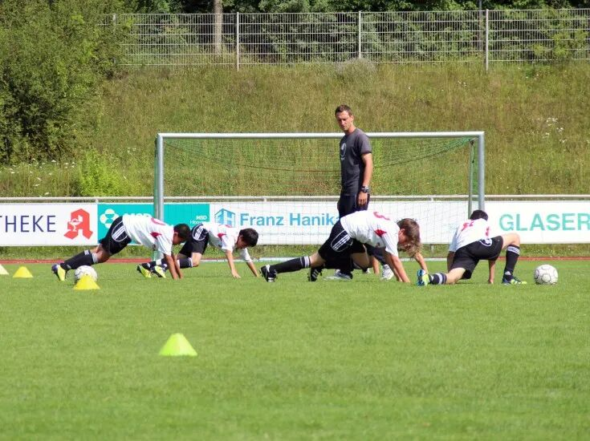
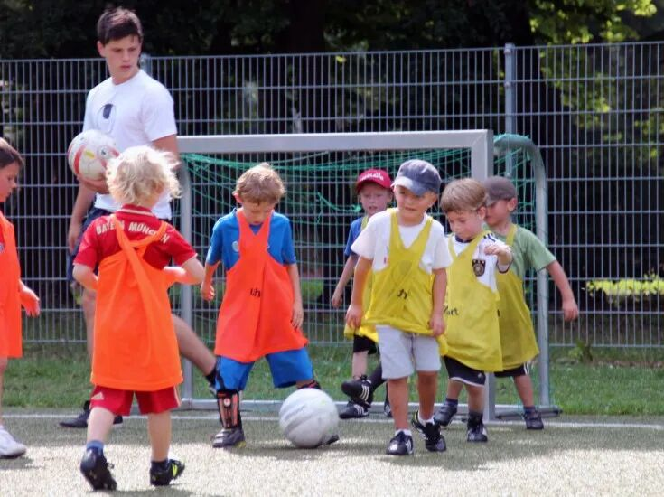
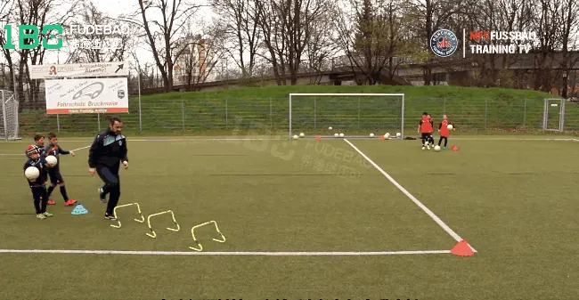
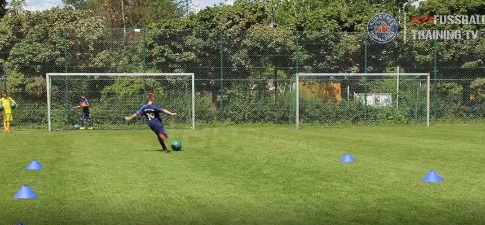

指导（instruction）作为一名合格教练员必备的素质，成为一堂训练课是否有效的重要环节。
今天就跟大家聊一聊，如何在训练中进行有效的指导。
#
什么是指导
首先抛出一个问题：什么是训练？
简单来说，就是指人有意识的使得受训者发生生理反应（如条件反射、强健肌肉等），从而改变受训者素质、能力的活动，其主要特点就是设定主题与反复的练习。

那么指导又是什么？
指导的意义在于，通过训练的方式来教育和改善。理想的指导可以带来的效果有：在运动表现方面带来永久的改变，以及态度和运用上可以带来永久的改变。
那么，应该如何进行指导程序呢？
有效的训练指导程序应该是一个反复的过程，它包括：
- 组织（organization）：设置训练结构，明确训练科目
- 示范（demonstration）：教练示范训练结构是如何运作
- 练习（practice）：球员根据示范开始练习
- 观察（observation）:教练在合适的位置观察练习，找出孩子的不足与问题
- 指导（instruction）：针对观察到的问题，进行指导与调整
如此反复，最终得到提高（progression）。

#
如何组织一堂训练课？
1.在训练前，教练员应提前理解主题的场景，为找出主题场景做准备；
2.依据训练主题，设置场区的大小、方向、标志物、备用球如何摆放、如何对队员进行分组，创造和主题相关的场景，目的是保证主题科目训练的同时，最大化的提升训练效率
关于训练单元的设计与训练效率的提升，详见之前的文章

#
如何进行示范并开展练习？
-
教练员应当完整的向队员示范展示练习的流程，对于初学者一定要放慢速度；

原文配图 · 弗德堡体育 -
安排队员在标定的位置，阐述练习的要求，清晰地灌输主题要点和步骤，让队员从较低的要求开始练习。
- 逐渐做出干预并要求改进，适时地变化练习的难度；首先熟悉训练的流程，再提升速度与强度，最终达到比赛的实际情况和要求
#
如何观察？观察什么？
选取视野较为开阔的角度，需要在场区外不停地走动；
对于面向球门的训练来说，如果有两组球员在同时训练，则需要将两个球门并排放置而不是放在球场的两端，这样一来，教练的视野能照顾到每一个球员，不用来回转身。

观察对象为：队员的行为、与主题相关的场景是否出现，快速分析并决策。
#
如何进行分析和指导？有哪些方式？
1.在技术练习中，多采用指令的方式进行指导，直接指出队员错误的动作并纠正，但尽量不要打断训练；
2.队员练习中出现与主题密切相关的问题时，及时叫停，恢复出现问题时的场景，引导队员发现问题；
3.间歇时，可采用问答的方式引导队员发现问题并纠错；
4.注意正反馈激励，对于技术动作不到位等情况，不能严厉的批评，以鼓励为主，让队员勇于试错，不断练习；但对于训练纪律方面的问题，要及时制止并严厉批评；
5.语言要简练、行动要快速、指令要有效，快速重启练习

文字与图片版权归各自权利人所有；排版根据抓取内容整理。